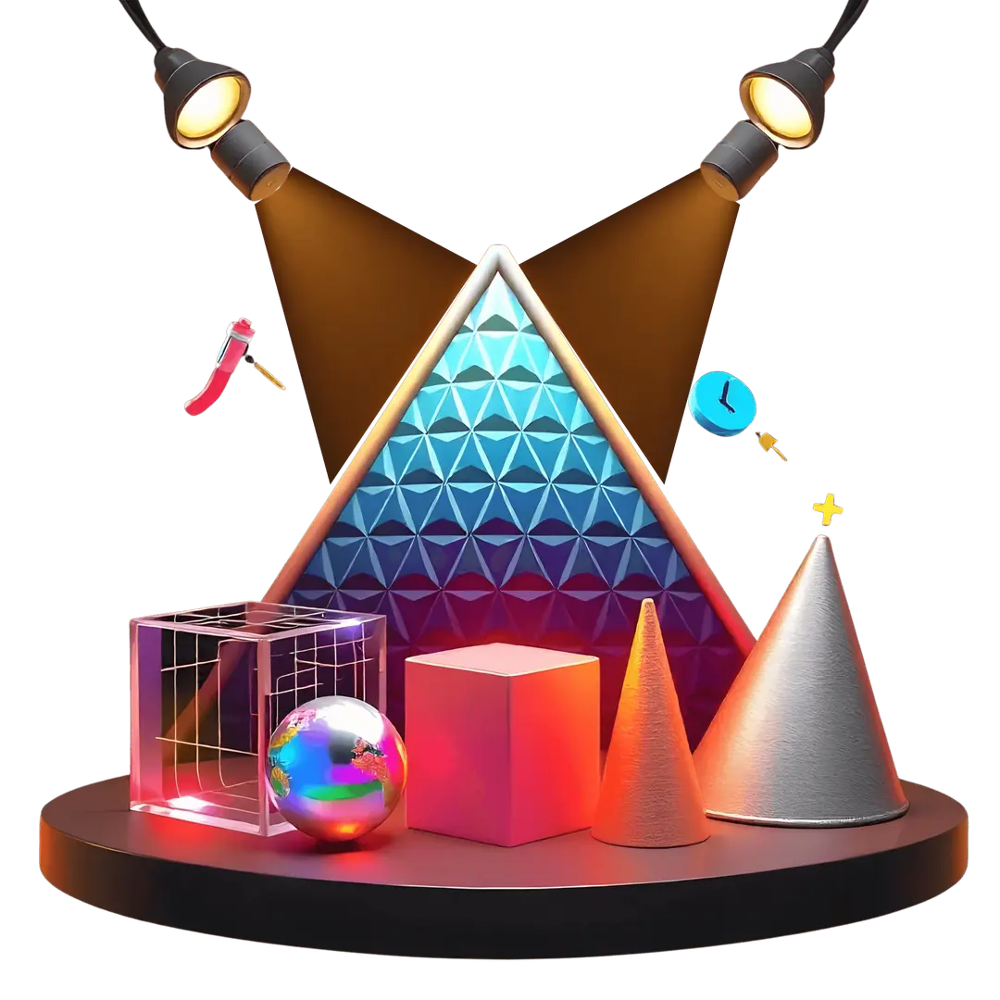

Discover The Best University In China Beijing
TEST-1
Description deeper Description deeper Description deeper Description deeper Description deeper Description deeper
TEST-2
Description deeper Description deeper Description deeper Description deeper Description deeper Description deeper
TEST-3
Description deeper Description deeper Description deeper Description deeper Description deeper Description deeper
What Students Say About University In China Beijing ?
1. The Absolute Architecture of Tomorrow: True innovation does not depend on yesterday's exhausted systems, nor does it yield to simplistic algorithmic prediction. It demands the unyielding courage of the human spirit. In this definitive presentation, global icon Jack Ma delivers a profound look into generational disruption. He completely shifts the core focus away from traditional corporate metrics, instead unveiling the raw power of the Love Quotient (LQ)—the irreplaceable human wisdom, deep empathy, and creative imagination that artificial intelligence and modern machines can never truly replicate or conquer.
2. The Crucible of Extreme Hardship: Aspiring entrepreneurs must recognize that real market dominance is never forged in comfortable environments. Ma outlines a legendary blueprint for young innovators: to stop fearing institutional rejection and to firmly realize that while today is difficult and tomorrow is much tougher, the day after tomorrow holds absolute, uncompromised victory. Most people give up on tomorrow evening, completely missing the dawn of their greatest breakthroughs simply because they lacked the sheer endurance to survive the darkest hours of institutional resistance.
3. Reframing Obstacles into Assets: Where the average individual sees a barrier, the elite developer sees a massive commercial marketplace opportunity. Every single global complaint, societal frustration, and industrial friction point is actually a hidden invitation to create value. By adopting this hyper-resilient mindset, you stop complaining about existing market conditions and start building the exact platforms that solve them, converting widespread societal skepticism into the foundational bedrock of your independent enterprise.
4. The Dawn of the Digital Paradigm: We are transitioning out of the information age and directly into the data manufacturing era. This massive structural transition rewards non-linear thinkers who rely on their unique vision rather than standardized academic formulas. Your absolute edge lies in your capability to combine technical mastery with profound emotional intelligence, ensuring that your web applications serve real human needs while remaining aggressively ahead of global digital trends.
5. Your Definitive Strategic Roadmap: Do not build for others; build to redefine the industries that others rely on. This is your definitive call to action to out-innovate, out-persist, and confidently command the global economy of tomorrow. By executing this vision with relentless consistency, you transform your independent web platform from a standard technical project into a vital, future-proof machine capable of dictating the trends of the digital frontier.